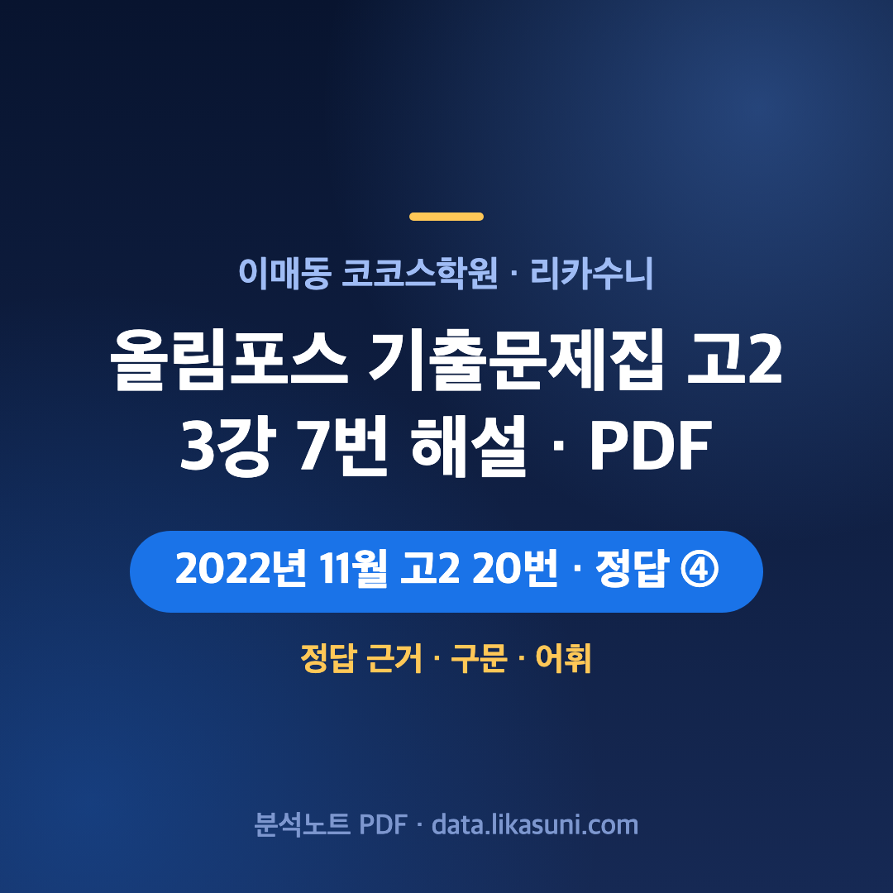
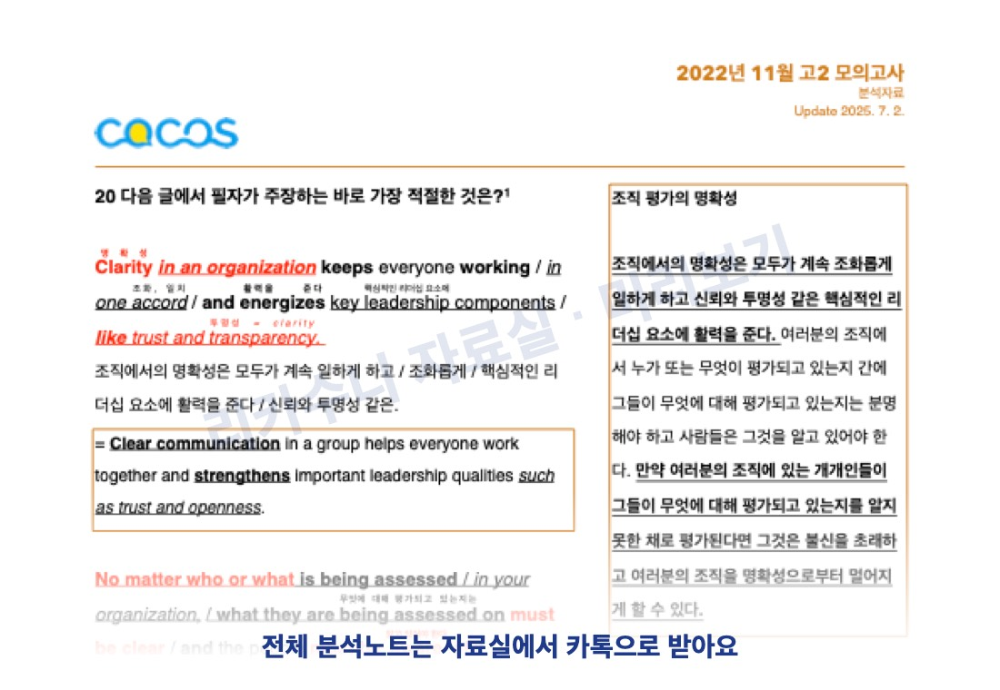

올림포스 전국연합학력평가 기출문제집 고2 3강 7번 해설이에요. (2022년 11월 고2 전국연합학력평가 영어 20번 · 필자의 주장 · 정답 ④)
정답 근거, 오답 거르는 법, 구문(No matter who or what · 의문사 + be being p.p. · 전치사 + 동명사), 어휘를 정리했고 분석노트 pdf 받는 곳은 글 아래에 있어요.
안녕하세요, 이매동 코코스학원 리카수니 원장입니다.
학생 요청으로 만든 분석노트를 바탕으로 정리했어요. 지문은 교재에 있으니 교재를 펴 놓고 함께 보세요.
· 교재: 올림포스 전국연합학력평가 기출문제집 고2 (EBS)
· 위치: 3강 7번 (필자의 주장)
· 원래 시험: 2022년 11월 고2 전국연합학력평가 영어 20번
· 정답: ④ 조직의 신뢰 형성을 위해 구성원에 대한 평가 요소가 명확해야 한다.
조직에서 '무엇을 평가하는지'가 분명해야 신뢰가 생기고, 그 신뢰가 있어야 평가도 정확해져 조직이 성장한다는 글이에요.
흐름은 명확한 소통 → 신뢰 → 정확한 평가 → 조직 성장이에요.
· 근거 1: 누가 무엇을 평가받든, 무엇을 기준으로 평가받는지가 분명해야 하고 사람들이 그걸 알아야 한다고 must 로 주장해요.
· 근거 2: 기준을 모른 채 평가받으면 불신이 생기고 조직이 명확성에서 멀어진다고 이유를 대요.
· 근거 3: 정확한 평가에는 신뢰가 필수이고, 그 신뢰는 명확성에서 온다고 정리해요.
→ '평가 요소가 명확해야 신뢰가 생긴다', 정답 ④예요.
· 글에 나오는 단어(리더십·소통·성장)만 보고 고르지 마세요. 핵심은 '평가 기준이 명확해야 한다'예요.
· 신뢰만, 또는 평가만 말하는 선택지는 반쪽이에요. '명확한 평가 → 신뢰'가 함께 들어가야 해요.
주장 문제는 must·essential·is a must 같은 말이 붙은 문장을 모아 보면 답이 보여요.

1) No matter who or what (= Whoever or whatever, 누가 또는 무엇이 ~하든)
→ No matter who or what is being assessed in your organization (2022년 11월 고2 20번)
2) 의문사 what 이 이끄는 명사절 주어 + 진행 수동태 (be being p.p.)
3) without + 동명사 + what 명사절 (~을 알지 못한 채)
4) For + 의미상 주어 + to부정사 / 주어 Failure to have trust (신뢰를 갖지 못하는 것)
5) 계속적 용법 which (which comes through clarity, which then empowers ~)
· clarity 명확성
· in one accord 조화롭게, 일치하여
· energize 활력을 주다
· component 요소
· transparency 투명성
· assess 평가하다 / assessment 평가
· be aware of ~을 알고 있다
· mistrust 불신
· cohesive 응집력 있는
· essential 필수적인
· hinder 방해하다
· conduct 수행하다
· in turn 결국, 차례로
· empower ~할 수 있게 하다
· optimal 최적의
· affect = impact = have an effect on 영향을 미치다
분석노트에 문단마다 쉬운 영어로 바꾼 문장(= Clear communication in a group helps ~)과, 틀린 곳 고치기·빈칸 채우기 문제(정답 포함)를 넣어 두었어요. affect 와 같은 뜻의 표현(have an impact on, have bearing on 등)도 정리했어요.
끊어 읽기·해석·구문·서술형 문제가 정리된 PDF 는 리카수니 자료실에서 카카오 로그인 후 카톡으로 받을 수 있어요.
올림포스 기출문제집 다른 강·번호도 요청할 수 있어요.
▶ 분석노트 요청하기 (리카수니 자료실)
https://data.likasuni.com/notes/#note-req
▶ 2022년 11월 고2 모의고사 전과목 문제·정답 pdf
https://data.likasuni.com/moe/go2/2022-11/
※ 출처: 한국교육방송공사(EBS) 올림포스 전국연합학력평가 기출문제집 고2 (2022년 11월 고2 전국연합학력평가 영어 20번). 지문 원문과 전체 해석은 싣지 않았어요.
분당 이매동 코코스학원은 초등·중등·고등 영어와 수학을 가르쳐요.
모의고사·수능특강·내신 대비가 궁금하시면 편하게 문의해 주세요.
· 홈페이지: https://www.cocosedu.co.kr/
· 주소: 경기 성남시 분당구 판교로 476 2층